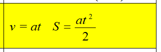

Задание 2. Помогите школьнику выполнить домашнее задание: решить задачу (таблица 1) и посчитать значение переменной b (таблица 2). Исходные данные вводятся с использованием метода prompt. При выводе информации предусмотреть форматирование документа, вывод текста задания, включая рисунок исходного выражения, и вывод информации о разработчике скрипта.
Вариант 4
Вычислить: Скорость в конце пути и путь, пройденный за время t с ускорением a при v0 = 0
